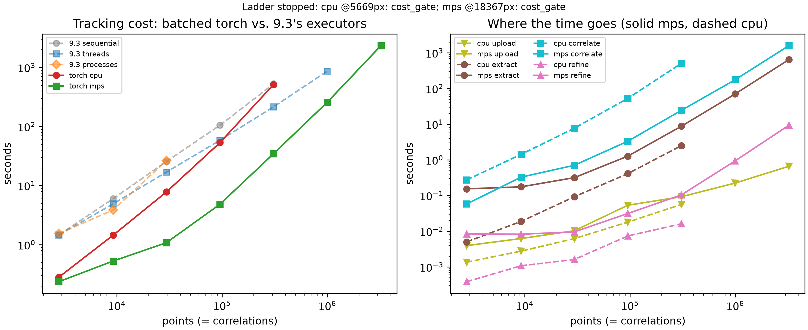

Parallelism with PyTorch
Timing at Scale found a wall. Tracking a million points took 14.4 minutes on ten cores. A billion correlations, the scale Path Forward names as the real target, extrapolates to roughly 1.4 weeks on the same machine. No amount of additional CPU-side tuning closes a gap that size.
That page also found why. Every point ran its own separate correlation call, and each call carried its own Python-level overhead: a function call, a pair of array slices, an FFT plan, an object constructed for the result. When correlating just a few hundred points, that overhead disappears into the noise, seemingly costing nothing. However, then correlating a million points, the overhead bloats up the cost significantly.
This page changes the shape of the work rather than the amount. Instead of running a million small correlations, it runs a small number of very large correlations. Thousands of points get correlated in a single call. No Python loop runs between them. It reruns Timing at Scale's own ladder that way, on the same machine and the same geometry. The two sets of numbers can then be compared.
Test Machine
Every number here depends on the hardware that produced it. Same machine Timing at Scale used:
- Apple MacBook Pro (14-inch, 2021), model
MacBookPro18,3, Apple M1 Pro chip, 10 CPU cores (8 Performance + 2 Efficiency), 32GB unified memory, macOS 26.6.2. (The operating system was recently updated to 26.6.2.)
The M1 Pro also carries an integrated GPU, which every prior page in this book has left completely unused.
Where This Came From
This page continues work that Andrew Polonsky had with a colleague at the Naval Research laboratory, email dated 2025-04-15. A summary of that discussion:
Pytorch may be the likely implementation strategy. Pytorch already optimizes math used in correlations for the GPU. Depending on the subset (kernel) size, we are right on the cusp of whether or not the FFT approach for cross-correlation will be faster than the brute force sliding dot product approach.
Three conclusions from that discussion shaped everything after it.
- Numba works well for CPU work but is the wrong tool for a GPU.
- Writing raw GPU code in a portable manner is painful enough that the NRL colleague resorted to hand-written OpenCL.
- PyTorch already solves the portability problem, because it runs the same code on a CUDA card, on an Apple GPU, or on a plain CPU.
A team meeting on 2025-09-23 recorded the decision in one line: "torch implementation, then CUDA implementation."
The implementation that followed established the batching trick this page's next section describes, and measured it on a Windows machine with an NVIDIA card. Those measurements used a 35x35 pixel kernel inside a 120x120 pixel search window:
| Correlations | PyTorch GPU | PyTorch CPU | NumPy CPU |
|---|---|---|---|
| 1,000 | 0.044 s | 0.836 s | 1.47 s |
| 50,000 | 3.09 s | 40.8 s | 73.6 s |
Two things stand out in that table. The GPU beat NumPy by 24x at 50,000 correlations. And the correlation itself stopped being the expensive part: building the tensors took 16.3 seconds and checking the answers took 12.1 seconds, against 3.09 seconds of actual computation. That finding shows up again on this page, at a different scale, on different hardware.
That earlier work also left three gaps. It never implemented an FFT version. It never refined a peak to subpixel accuracy. And it never ran on macOS at all — the correlation module opened with a hard refusal:
if platform.system() != "Darwin":
import torch
else:
raise RuntimeError("This module requires PyTorch, which does not run on macOS.")
That claim is false. PyTorch runs on macOS, and has supported Apple GPUs since 2022.
This page closes two of those three gaps: it runs on Apple silicon, and it refines to subpixel. The FFT version stays open.
Kernels, Search Windows, and Names
Two vocabularies collide here, so it is worth harmonizing them.
This book has used kernel and search area since Cross Correlation. Commercial DIC software and the earlier work above use different words for the same two things:
| This book | VIC-2D and the earlier work | What it is |
|---|---|---|
| kernel | subset | The small patch cut from the reference image, the thing being located |
| search area | area of interest, or aoi | The larger region of the current image to look inside |
They are the same two arrays. A subset is a kernel. An aoi is a search area. The code below uses this book's names; the tensor shapes quoted from the earlier work use its own.
One Call, N Correlations
Here is the trick.
conv2d slides a small array over a larger one and reports how well
they match at every position. That is one correlation. To get N
correlations, the naive approach calls it N times in a Python loop, which
reintroduces exactly the per-call overhead this page seeks to remove.
The way out is to stack the work so a single call does all of it.
conv2d accepts a batch of images with multiple channels, and a set
of filters. By default it applies every filter to every channel, which
would compute an N x N cross product — every kernel against every search
area. That is both wrong and N times too much work.
The groups argument fixes it. Setting groups=N splits N input
channels into N independent groups of one. Kernel i then sees search
area i, and nothing else.
Three symbols carry through the rest of this page:
- is the point count, one correlation each.
- is the kernel's side, in pixels.
- is the search area's side, also in pixels.
# search areas: (1, N, S, S) N search areas, stacked as CHANNELS
# kernels: (N, 1, K, K) N kernels, one per group
# output: (1, N, S-K+1, S-K+1)
surfaces = F.conv2d(search_areas, kernels, groups=N)
Read the shapes carefully, because they are not the obvious ones. The batch dimension holds a single element. The channel dimension carries the N correlations. That deliberate misuse of the two dimensions is what lets one call do N independent correlations.
For this book's own example geometry, tracking 2,809 points in a 300 pixel image results in the following shapes:
(1, 2809, 48, 48)for the search areas,(2809, 1, 26, 26)for the kernels, and(1, 2809, 23, 23)for the output.
Every one of those 2,809 correlations happens inside a single conv2d call.
To be precise about what that geometry is: a 300 x 300 pixel rosta
speckle image, with a square 53 x 53 grid of points at 5 pixel spacing,
giving 2,809 points.
Simple Stretch sets up something
very similar, and illustrates it. It uses a 300 x 300 pixel astronaut
image, with a 53 x 54 grid at the same 5 pixel spacing, giving 2,862
points — one row more than this page uses. That page counts 2,682 in its
own heading, not 2,862, because VIC-2D masks out the 180 positions whose
correlation window would run off the edge of the image. The grid is still
2,862 points; 2,682 of them survive the mask.
Its figures are the closest picture of what this density looks like: the whole grid drawn over the reference image, then a true-scale zoom into one corner where the individual points finally separate.
One convenient accident makes this work without any correction.
Mathematical convolution flips the kernel before sliding it; correlation
does not. Despite its name, conv2d does not flip. It already computes
cross-correlation, which is exactly what tracking a point needs.
What conv2d Actually Computes
The shapes above say what goes in and what comes out. They say nothing about how, and the how turns out to matter for reading this page's results.
F.conv2d is not one algorithm. It is a dispatch. PyTorch hands the problem to a vendor library: oneDNN on a CPU, cuDNN on
an NVIDIA card, MPSGraph on an Apple GPU. That library then picks an
implementation based on the shapes it was given. The usual pick lowers the convolution
into a matrix multiply, an approach called implicit GEMM, so it lands on
decades of tuned linear-algebra work.
That is a sliding dot product, restructured. It is not an FFT.
cuDNN does carry FFT-based algorithms and can select them, but typically for kernels much larger than the 26x26 one this page uses. So in practice, on the shapes here, the answer is: brute force, executed extremely well.
Which lands this page on a specific side of the tradeoff that email
named. A direct sliding correlation costs roughly , where
counts search-area pixels and the kernel's side. An FFT-based one
costs roughly . The earlier work's own estimate put the FFT
about 300 times ahead for a 35 x 35 pixel kernel in a 120 x 120 pixel window.
Every CPU measurement in Subpixel Accuracy, High Point Density and Timing at Scale came from the FFT side of that cusp. Every measurement on this page comes from the brute-force side. Comparing them changes two things at once: the execution engine, and the algorithm. Keep that in view when reading the table below. A speedup here is not purely a GPU result.
One more detail worth naming. Setting groups=N over N channels makes
this a depthwise convolution — the same pattern that appears in
mobile-optimized neural networks. Vendor libraries treat depthwise
convolution as a special case with its own dedicated routines, separate
from the ones dense convolution uses. Whether that helps or hurts at
these shapes is a measurable question, not an assumable one.
Choosing a Device
PyTorch runs the same code on three kinds of hardware. Picking one is a short ladder, best to worst:
if torch.cuda.is_available():
# NVIDIA GPU. Linux and Windows only -- Apple dropped NVIDIA support
# years ago, so this branch never fires on a Mac.
device, sync = torch.device("cuda"), torch.cuda.synchronize
elif torch.backends.mps.is_available():
# Apple GPU, via Metal Performance Shaders. macOS ONLY, and only on
# Apple silicon (M1 and later). Never available on Linux or Windows,
# and not on an Intel Mac either.
device, sync = torch.device("mps"), torch.mps.synchronize
else:
# Every platform has this one. Always available, always correct,
# never the fastest.
device, sync = torch.device("cpu"), lambda: None
Note what that ordering implies. No single machine can take the first two branches. A CUDA card and an Apple GPU are mutually exclusive in practice, so this is not really a preference ranking — it is a portability ladder. The same source runs on a Linux workstation, a Windows box, and this laptop, and each one lands on whichever accelerator it actually has. That portability is the whole reason the 2025-04-15 email above landed on PyTorch rather than hand-written GPU code.
MPS stands for Metal Performance Shaders. It is Apple's framework for offloading matrix operations and tensor math onto the GPU built into Apple silicon — the M1, M2, M3 and M4 families. It is native, and it requires an Apple silicon Mac. It is fast for two reasons: the GPU runs enormous numbers of operations in parallel, and Apple's unified memory gives it very high bandwidth to work against.
Unified memory has a second consequence worth stating before any number gets compared across machines. On this laptop, the CPU and the GPU share one physical pool of memory. Moving an array to the GPU does not copy it across a bus. On a discrete NVIDIA card it does, because host and device hold genuinely separate memory. So transfer costs on this machine are not the transfer costs on that one. A speedup measured here does not carry over to a CUDA result.
Two practical constraints follow from the device choice.
Apple GPUs do not support float64. Every tensor downcasts to float32. This book's images are 8-bit to begin with, so the input loses nothing. The correlation arithmetic does run at lower precision than the CPU path uses. Whether that costs accuracy is measured below rather than assumed.
GPU work is queued, not immediate. A call returns as soon as the work
is submitted, long before it finishes. Timing it without a sync() call
measures how fast the queue accepts work — a number that looks
spectacular and means nothing. Every timing on this page brackets its own
synchronize call.
One thing this page's benchmark deliberately does not do: fall back to the CPU when a requested device is missing. The earlier work fell back with a printed warning, which is how a CPU measurement ends up labeled as a GPU one. A missing device here stops the run and says so.
Batching Against Device Memory
Stacking N search areas into one tensor raises a question Timing at Scale never had to ask. How much memory does that tensor take?
One search area is pixels on a side, so it holds float32 values. At the 300 pixel image size, , so that is 48 x 48 x 4 bytes, about 9 KB. Small. But Timing at Scale grows the search area along with the image, because a 2% stretch displaces a far edge further in a bigger picture. By the 10204 pixel size, , and one search area costs 420 x 420 x 4 bytes, about 706 KB.
Multiply by point count and the totals stop being comfortable:
| Width (px) | Points | Search area (px) | All search areas at once (GB) | Both images, resident (GB) |
|---|---|---|---|---|
| 300 | 2,809 | 48x48 | 0.0 | 0.00 |
| 540 | 9,216 | 58x58 | 0.1 | 0.00 |
| 972 | 29,584 | 74x74 | 0.6 | 0.01 |
| 1750 | 95,481 | 102x102 | 4.0 | 0.02 |
| 3149 | 308,025 | 156x156 | 30.0 | 0.08 |
| 5669 | 996,004 | 250x250 | 249.0 | 0.26 |
| 10204 | 3,229,209 | 420x420 | 2,278.5 | 0.83 |
| 18367 | 10,452,289 | 728x728 | 22,158.2 | 2.70 |
| 33060 | 33,860,761 | 1280x1280 | 221,909.9 | 8.74 |
| 59508 | 109,704,676 | 2274x2274 | 2,269,164.9 | 28.33 |
This machine has 32 GB, and Apple's Metal layer will admit only about 26.8 GB of it as a working set. So materializing every search area at once stops being possible somewhere between the 1750 pixel and 5669 pixel sizes.
The fix is to process points in chunks. Take a few thousand points,
build their tensors, correlate them, keep the answers, free the tensors,
move on. Chunk size becomes this page's own new variable, the way
max_workers was Parallelization's. A larger
chunk spreads each call's fixed cost over more correlations. A smaller
chunk keeps the batch inside memory. The benchmark below sizes each chunk
to fit a stated 4 GB budget and reports what it chose.
Chunking also exposes something wasteful. At 5 pixel point spacing and a 250 pixel search area, two neighboring points' search areas overlap almost completely. Materializing both copies nearly every pixel twice, and across a whole grid the same pixels get copied hundreds of times over. The correlation needs those copies laid out contiguously, so the waste buys something real. But it explains why the extraction step below costs what it does.
That waste is also the reason the last column above matters separately from the fourth. Search areas are chunkable; the two full images are not. Both images stay resident for an entire size, because every chunk cuts its windows out of them. Chunking can shrink everything except those two arrays — which is exactly what makes this page's stopping rule work, below.
Subpixel from a Correlation Surface
conv2d returns the whole correlation surface, not just its peak. That
surface is more informative than the single best-matching integer
position, and it makes subpixel accuracy nearly free.
The true peak almost never lands exactly on a sample. Fitting a parabola through the best sample and its two neighbors recovers where it actually sits:
applied independently along each axis. It costs one gather of each peak's immediate neighborhood, then arithmetic. It batches exactly the way the correlation does.
This closes one of the three gaps the earlier work left open. That implementation stopped at the integer peak and never refined it.
Parabolic fitting carries a known bias called peak locking: it pulls estimates slightly toward whole-pixel positions. Rather than assert how large that bias is, this page measures it. Every point's true destination is known exactly — a point at lands at — so both the error and the bias can be checked directly against truth. Those results appear in the next section.
Checking the Answer Before Timing It
A fast wrong answer is worthless. Before any timing on this page, the batched correlation gets checked two ways at the 300 pixel size, on every device.
Does it find the same integer positions
dictk.grid.locate finds? Not quite,
and the gap is instructive. It agrees on 2,772 of 2,809 points, 98.7%.
Every one of the 37 disagreements is off by exactly one pixel in and
zero in .
Those 37 are not errors. Checking where they fall: every disagreeing
point has a true destination whose fractional part lies between 0.460 and
0.560, averaging 0.503. They sit on the half-pixel boundary, where
rounding to a whole number is genuinely ambiguous. Phase correlation and
a sliding dot product break that tie differently. Measured against true
positions rather than against each other, the batched result is
marginally closer: 0.2598 pixels of mean absolute error against
locate's 0.2606.
How close does the refined position land? Mean absolute error against analytical truth, at the same 2,809 points:
| Method | Mean absolute error |
|---|---|
grid.locate_subpixel, upsample_factor=100 | 0.0925 px |
Batched conv2d, parabolic refinement | 0.0369 px |
The parabolic fit is 2.5 times more accurate than the upsampled-DFT refinement Subpixel Accuracy introduced, and it costs a small fraction of the correlation it rides on. That result was not expected. It is worth stating plainly that these are two different refinement mechanisms measured against the same truth, not a bug in either.
Peak locking does show up, mildly. Binning the refined positions' fractional parts into ten bins gives 330, 338, 258, 219, 280, 265, 210, 257, 313, 339 — against 280 per bin if the spread were flat. The bias pulls toward whole pixels, by roughly 20% excess in the outer bins. It is real, it is visible, and it is small enough that the method still beats the alternative above by a wide margin.
The Apple GPU produces results identical to the CPU, digit for digit, at every one of those 2,809 points. float32 costs nothing measurable here.
The Same Ladder, on PyTorch
Same image sizes, same point grids, same kernel, same search areas,
same machine. The only change is what runs the correlation.
The threads column is carried over from Timing at
Scale, unchanged. It was that page's fastest CPU
result, so it is the number worth beating:
| Width (px) | Points | Search area (px) | threads, Timing at Scale | torch CPU | torch MPS | MPS speedup vs threads |
|---|---|---|---|---|---|---|
| 300 | 2,809 | 48x48 | 1.5s | 0.3s | 0.2s | 6.2x |
| 540 | 9,216 | 58x58 | 4.9s | 1.4s | 0.5s | 9.3x |
| 972 | 29,584 | 74x74 | 16.9s | 7.8s | 1.1s | 15.7x |
| 1750 | 95,481 | 102x102 | 58.6s | 53.4s | 4.8s | 12.1x |
| 3149 | 308,025 | 156x156 | 215.2s | 512.7s | 34.6s | 6.2x |
| 5669 | 996,004 | 250x250 | 861.5s | cost gate | 256.5s | 3.4x |
| 10204 | 3,229,209 | 420x420 | timeout | not run | 39 min | — |
| 18367 | 10,452,289 | 728x728 | not run | not run | cost gate | — |
Three of those cells report a stop rather than a time. cost gate means this page's own predicted-cost rule declined to run that size, explained in Knowing When to Stop below. timeout means Timing at Scale's own 1800-second budget expired before that run finished. not run means the ladder never reached that size, because the device had already stopped one rung earlier. The remaining dash, in the speedup column, marks a ratio with no denominator to compute it from.

The Apple GPU wins at every size, but not by a constant factor. The way that factor moves is the most interesting thing in the table.
It climbs first. 6.2x at 2,809 points, 9.3x at 9,216, peaking at 15.7x at 29,584 points. That is batching paying off exactly as expected: more correlations per call, the same fixed cost spread thinner.
Then it falls. 12.1x, then 6.2x, then 3.4x at 996,004 points. Point count kept growing the whole time, so batching cannot explain the decline. The search area explains it.
The Cusp, Measured
Look at the torch CPU column against the threads column beside it.
Both run on the same ten cores. They differ only in algorithm.
At 29,584 points, with a 74x74 search area, torch CPU takes 7.8 seconds against 16.9. The sliding dot product wins, better than two to one.
At 95,481 points, with a 102x102 search area, they are 53.4 against 58.6. A tie.
At 308,025 points, with a 156x156 search area, torch CPU takes 512.7 seconds against 215.2. The FFT wins, better than two to one, in the other direction.
That crossover is the thing Polonsky's 2025 email predicted without being able to locate:
Depending on our subset size, we are right on the cusp of whether or not doing the FFT for cross-correlation will be faster than brute force sliding dot product.
On this machine, at this book's 26x26 kernel, the cusp sits near a
100x100 pixel search area. Below it, brute force wins. Above it, the FFT
wins. The complexity argument in What conv2d Actually Computes
predicts exactly this shape: direct correlation costs and
grows with the search area, while an FFT costs and barely
notices.
This also explains the Apple GPU's shrinking lead. The GPU is running the losing algorithm. Its hardware advantage is large enough to stay ahead anyway, but it is spending that advantage fighting an algorithm that scales worse. At 996,004 points it is still 3.4x faster than ten CPU cores, while doing asymptotically more work to get there.
Which reframes what this page found. The result is not "the GPU is 3.4x faster." It is that a GPU running the wrong algorithm still beats ten CPU cores running the right one. Nobody has combined the two yet.
Where the Time Goes
Splitting each size into its four stages answers the question hdic's own measurements raised, where building tensors cost five times what the correlation cost:
| Width (px) | Points | upload | extract | correlate | refine |
|---|---|---|---|---|---|
| 300 | 2,809 | 0.00s (2%) | 0.15s (65%) | 0.06s (25%) | 0.01s (4%) |
| 540 | 9,216 | 0.01s (1%) | 0.18s (33%) | 0.33s (62%) | 0.01s (2%) |
| 972 | 29,584 | 0.01s (1%) | 0.32s (29%) | 0.71s (65%) | 0.01s (1%) |
| 1750 | 95,481 | 0.05s (1%) | 1.28s (26%) | 3.34s (69%) | 0.03s (1%) |
| 3149 | 308,025 | 0.09s (0%) | 8.77s (25%) | 24.49s (71%) | 0.10s (0%) |
| 5669 | 996,004 | 0.22s (0%) | 70.25s (27%) | 175.54s (68%) | 0.93s (0%) |
| 10204 | 3,229,209 | 0.66s (0%) | 644.73s (28%) | 1589.20s (68%) | 9.33s (0%) |
Extraction is not the bottleneck here, and that is worth stating clearly because the earlier work found the opposite. Two differences explain it. That implementation rebuilt its tensors from NumPy on every batch, crossing the host boundary each time. This one uploads both images once per size, then cuts every window straight out of device memory. That fix came from catching this script doing the slow thing first, and measuring the difference.
Refinement costs almost nothing, which was the hope. Getting subpixel
accuracy out of a surface conv2d already computed is close to free.
Knowing When to Stop
Timing at Scale stopped each run with a 1800-second wall clock. That was the right tool there, and it is the wrong tool here.
macOS does not raise a catchable error when a process exhausts host memory. It swaps, or the kernel kills the process outright. There is no exception to catch, so a clock was the only reliable stop available.
A GPU is different. It raises a real, catchable Python exception when it runs out of device memory. So this page retires the clock and stops on two conditions instead, neither of which is an arbitrary time limit.
First, a caught out-of-memory error. This works because of the asymmetry the memory section already named. Chunking can shrink every per-point tensor, so chunking alone never runs out. The two full images cannot be chunked — both stay resident for an entire size. That unchunkable part is what eventually fails. Before each size, the benchmark computes what those two images will need and compares it against what the device will admit. Then it attempts the size anyway, and catches whatever actually happens. A prediction earns its place only if the measurement gets a chance to contradict it.
Finding the right exception took a deliberate test rather than an
assumption. Apple's Metal layer reports running out of memory in more
than one way, and only one of them uses the phrase "out of memory". An
allocation past the remaining budget raises MPS backend out of memory.
A single tensor past Metal's per-buffer ceiling raises Invalid buffer size: 3013.73 GiB instead, which never says "memory" at all. Forcing
both conditions on purpose, at a small size, revealed the second one.
Trusting the first message to be the only one would have turned a real
memory finding into an unexplained crash.
Second, a predicted-cost gate. Compute grows faster than memory here, so the ladder becomes impractical before it becomes impossible. Each size predicts its own cost from the previous size's measured rate, counting both point count and per-correlation size. A prediction past one hour stops that device, and the prediction gets recorded along with the measurement it came from.
That is not a new idea on this page. Timing at Scale already reasoned this way twice: it stopped a run deliberately once its cause was understood, and it extrapolated a measured rate out to 1.4 weeks rather than spending 1.4 weeks confirming it. The change here is making that reasoning the rule up front, instead of a judgment call afterward.
A wall-clock watchdog does still exist, set at four hours. Its only job is to stop an unattended overnight run from hanging forever on a wedged GPU driver. It sits far past anything the cost gate would allow. So if it ever fires, that is a harness problem to investigate, not a finding about scaling. There, the timeout was the finding. Here it must never be.
Where It Breaks
Neither device ran out of memory. Not once, at any size.
That is worth stating bluntly, because this page was built expecting the opposite. The stopping rules above put a caught out-of-memory error first, and worked out in advance which size should trigger it. The measurement contradicted the prediction. The cost gate fired first, on both devices, and the memory wall was never reached.
The numbers are not close. At the largest size either device attempted, the two resident images occupied 0.83 GB of Metal's 26.8 GB budget — about 3%. Peak host memory across the entire run reached 13.9 GB of 32. The prediction that images would eventually stop fitting is still arithmetically correct, at a size around 59508 pixels. This ladder simply never gets there, because the arithmetic to process such a size takes longer than anyone would wait.
cpu stopped at 5669 pixels. Its own measured rate at 3149 pixels
predicted 4,890 seconds for the next size, past the one-hour budget. The
prediction was recorded rather than run.
mps went two sizes further. It completed 10204 pixels — 3,229,209
points in 2,334.7 seconds — then predicted 23,937 seconds for 18367
pixels and stopped.
That 10204 pixel size is the interesting one. Timing at Scale attempted exactly it, with threads, and could not finish it. The Apple GPU completed it in 39 minutes.
Throughput Rises, Then Falls
Points tracked per second, at each size mps completed:
| Width (px) | Search area (px) | Points | Seconds | Points/second | 1e9 points would take (h) |
|---|---|---|---|---|---|
| 300 | 48x48 | 2,809 | 0.2 | 11,868 | 23 |
| 540 | 58x58 | 9,216 | 0.5 | 17,415 | 16 |
| 972 | 74x74 | 29,584 | 1.1 | 27,374 | 10 |
| 1750 | 102x102 | 95,481 | 4.8 | 19,723 | 14 |
| 3149 | 156x156 | 308,025 | 34.6 | 8,890 | 31 |
| 5669 | 250x250 | 996,004 | 256.5 | 3,884 | 72 |
| 10204 | 420x420 | 3,229,209 | 2,334.7 | 1,383 | 201 |
Throughput climbs to 27,374 points per second at 29,584 points, then falls away steadily. By the largest size it has dropped to 1,383, a twentyfold decline.
Point count is not the cause. Point count only ever increased. The search area is the cause. The CPU comparison already showed why: a sliding dot product's work grows with the area it slides over, and this ladder grows that area at every rung.
Which makes the last column read as a warning rather than a forecast. "How long would a billion correlations take" has no single answer here. It is 10 hours at a 74x74 search area and 201 hours at a 420x420 one, using the same hardware, the same code, and the same algorithm. Search area, not point count, is what decides.
Against Timing at Scale's own closing extrapolation, measured at the same 996,004-point size: threads managed 1,156 points per second, which is where that page's estimate of roughly 1.4 weeks for a billion came from. The Apple GPU manages 3,884 at the same size. Same problem, same machine, about 3 days instead of 10.
That is a real improvement and it is not enough. A billion correlations is Path Forward's entry-level target, not its ceiling. Three days of continuous computation for the smallest interesting problem still rules out the tens of billions that page names as realistic.
The encouraging part is where the remaining headroom sits. This page spent its entire GPU advantage running the algorithm that the cusp measurement above shows is the wrong one at these search areas. Nothing here has yet combined the better hardware with the better algorithm.
CUDA, Pending
This page has no NVIDIA results.
The machine to run them on exists: a Windows workstation with a CUDA card, the same one that produced the 2025 measurements quoted at the top of this page. Access to it is pending, so the CUDA column below stays empty rather than estimated.
The benchmark already supports it. device_select resolves cuda first
when a CUDA device is visible, and every timing already brackets the
correct per-device synchronize call. Running this page's ladder there
requires no code change — only the machine.
Two things are worth knowing in advance about how that comparison will
read. The unified memory point above means transfer costs will differ
structurally, not just in magnitude. And cuDNN chooses among more
convolution algorithms than Metal does, including FFT-based ones. So the
dispatch question in What conv2d Actually Computes may resolve
differently there.
What Comes Next
The FFT gap is still open, and it is now the obvious next step.
Every correlation on this page is a sliding dot product. Every CPU correlation in Subpixel Accuracy, High Point Density and Timing at Scale is an FFT. Those are the two sides of the cusp Polonsky's 2025 email named. This book has now measured each side on different hardware. That is exactly the comparison that cannot settle the question.
A batched torch.fft phase correlation would settle it. It would run the
same algorithm the three pages above already use, on the same devices
this page already measures. That makes the comparison engine-for-engine,
instead of across two variables at once. It would also reuse this page's chunking,
its device selection, and its stopping rules unchanged.
That work is not started.
parallelism_pytorch_bench.py
"""Parallelism with PyTorch: rerun Timing at Scale's own ladder on a
batched PyTorch correlation, on this machine (Apple M1 Pro, 32GB RAM,
10 cores -- see parallelism_pytorch.md's own Test Machine section),
across every device this machine offers.
Timing at Scale (9.3) tracked one point per `dictk.grid.locate_subpixel`
call, and every call ran its own FFT. This script replaces that inner
loop entirely. It stacks many search windows into one tensor, many
kernels into another, and correlates all of them in a single
`F.conv2d` call -- the grouped-convolution trick hdic's own
`xcorr_pytorch.py` established (see parallelism_pytorch.md for the
attribution and the shape derivation).
Not part of the dictk package -- a standalone, one-time measurement
script, matching timing_at_scale_bench.py's and parallelization_bench.py's
own precedent. Its output (parallelism_pytorch_bench.csv,
parallelism_pytorch_bench.png) is committed alongside it rather than
regenerated on every book build.
dictk itself does not depend on PyTorch, and this script does not change
that. It guards its own imports and exits with a message rather than a
traceback when torch is missing. See torch_require below.
Geometry is imported from timing_at_scale_bench, never redefined here.
Same kernel margin, same stretch factor, same origin fraction, same
spacing, same rosta parameters, same geometric ladder. A number this
script produces is only comparable to 9.3's if the geometry underneath
it is identical, so it is taken from 9.3's own module rather than
copied.
Stopping rules (read before changing the ladder): 9.3's own 1800-second
per-tier wall clock is NOT reused. macOS gives no catchable MemoryError,
so 9.3 had no better option. A GPU does: it raises a real, catchable
out-of-memory exception. This script therefore stops on three
conditions, in priority order --
1. A caught out-of-memory error. Search windows are chunkable, so
chunking alone never runs out. The two full images are not
chunkable; both stay resident for the whole size. That unchunkable
residency is what eventually fails, and _memory_predict reports the
prediction before each size so the measurement can confirm or
contradict it.
2. The predicted-cost gate. Compute grows faster than memory here, so
the ladder turns impractical before it turns impossible. Each size
predicts its own cost from the PREVIOUS size's measured throughput.
A prediction past COST_BUDGET_S stops that device, and the
prediction is written to the CSV with the throughput it came from.
3. WATCHDOG_S, a harness safety net only. It exists so an unattended
run cannot hang forever on a wedged GPU driver. It is set far past
anything the cost gate would allow. If it ever fires, that is a
harness problem to investigate, not a finding about scaling --
unlike 9.3, where the timeout WAS the finding.
Must be a real module, not `python3 -c` -- the controller re-invokes
this same file as a subprocess per (width, device).
Re-run with: python3 parallelism_pytorch_bench.py
Run the correctness gates alone:
python3 parallelism_pytorch_bench.py --check
Re-run a single (width, device) directly:
python3 parallelism_pytorch_bench.py --worker 3149 mps
"""
import csv
import os
import platform
import resource
import subprocess
import sys
import time
from pathlib import Path
import matplotlib.pyplot as plt
import numpy as np
from dictk.grid import generate, locate, locate_subpixel
from dictk.image import PixelCoordinate, stretch
from dictk.rosta import rosta
# Geometry comes from 9.3's own module, never redefined here -- see the
# module docstring for why. Importing it also keeps this script honest if
# 9.3's ladder is ever retuned: both pages move together, or neither does.
import timing_at_scale_bench as bench
CSV_PATH = Path(__file__).parent / "parallelism_pytorch_bench.csv"
PNG_PATH = Path(__file__).parent / "parallelism_pytorch_bench.png"
TIMING_CSV = Path(__file__).parent / "timing_at_scale_bench.csv"
DEVICES = ("cpu", "mps", "cuda")
# Chunk budget, in GB of device allocation per batch. Deliberately well
# under this machine's own ~26.8GB MPS working set: the two full images
# stay resident for the whole size on top of whatever a chunk holds, and
# a chunk allocates its windows, its correlation surfaces, and its
# kernels all at once. 4GB leaves room for all of that at every size the
# ladder reaches.
CHUNK_BUDGET_GB = 4.0
# Predicted-cost gate. A size whose predicted wall time exceeds this,
# extrapolated from the previous size's own measured throughput, is not
# attempted -- the prediction is recorded instead. One hour is a
# deliberate choice, not a tuned constant: it is long enough that every
# size the ladder can actually finish gets measured, and short enough
# that the two sizes past this machine's practical limit (roughly 10
# hours and 104 hours of arithmetic, by the FLOP estimate on the page)
# are reported rather than run.
COST_BUDGET_S = 3600.0
# Harness safety net ONLY -- see the module docstring's own stopping-rules
# note. This must never be the reason a result is reported. Four hours is
# far past COST_BUDGET_S, so a size that fires this one has hung rather
# than merely run long.
WATCHDOG_S = 4 * 3600
def torch_require():
"""Imports torch, or exits with a message instead of a traceback.
dictk does not depend on PyTorch. This script does. A missing
install is an ordinary, expected situation for someone reading the
book, so it gets an explanation rather than an ImportError.
"""
try:
import torch
import torch.nn.functional as functional
except ImportError:
print(
"PyTorch is required to run this benchmark, and is not installed.\n"
"\n"
"dictk itself does not depend on PyTorch. This standalone\n"
"benchmark script does, and it is the only thing in the book\n"
"that does.\n"
"\n"
"Install it with:\n"
" uv pip install torch\n"
"\n"
"Platform-specific builds (CUDA, ROCm, CPU-only):\n"
" https://pytorch.org/get-started/locally/",
file=sys.stderr,
)
raise SystemExit(1)
return torch, functional
def device_select(*, prefer: str):
"""Resolves `prefer` to a real torch device, or exits explaining why
it cannot.
Returns `(device, sync)`. `sync` blocks until queued work on that
device has actually finished. GPU work is submitted asynchronously,
so a timer that doesn't call it measures queue submission rather
than computation.
This never silently falls back to CPU. hdic's own xcorr_pytorch.py
fell back with a printed warning, which is how a CPU measurement
ends up labeled as a GPU one. A results table that mislabels its own
device is worse than a missing row.
"""
torch, _ = torch_require()
# No machine ever offers both accelerators. "mps" is macOS only, and
# only on Apple silicon (M1 and later) -- never Linux, never Windows,
# not even an Intel Mac. "cuda" needs an NVIDIA card, which in practice
# means Linux or Windows, since Apple dropped NVIDIA support years ago.
# "cpu" is the only entry every platform always has.
available = ["cpu"]
if torch.backends.mps.is_available():
available.append("mps")
if torch.cuda.is_available():
available.append("cuda")
if prefer not in available:
if prefer == "mps":
why = (
"this machine is not Apple silicon, or this torch build\n"
" has no Metal support"
if not torch.backends.mps.is_built()
else "torch was built with Metal support, but no MPS device\n"
" is available here"
)
elif prefer == "cuda":
why = "no CUDA device is visible to torch on this machine"
else:
why = "unrecognized device name"
print(
f"Device '{prefer}' was requested and is not available.\n"
f" Reason: {why}\n"
f" This machine offers: {', '.join(available)}\n"
f" Platform: {platform.platform()}\n"
f" torch: {torch.__version__}\n"
"\n"
"Not falling back to another device -- a timing labeled with\n"
"the wrong device would corrupt this benchmark's own results.",
file=sys.stderr,
)
raise SystemExit(2)
device = torch.device(prefer)
if prefer == "cuda":
sync = torch.cuda.synchronize
elif prefer == "mps":
sync = torch.mps.synchronize
else:
def sync():
return None
return device, sync
def device_budget_gb(*, prefer: str) -> float:
"""How much memory this device will admit, in GB.
MPS reports a recommended working set rather than the full unified
pool -- Metal will refuse allocations past it even though the host
has more RAM installed. CUDA reports its own card's total. CPU falls
back to installed system memory.
"""
torch, _ = torch_require()
if prefer == "mps":
return torch.mps.recommended_max_memory() / 1e9
if prefer == "cuda":
return torch.cuda.mem_get_info()[1] / 1e9
if platform.system() == "Darwin":
out = subprocess.run(
["sysctl", "-n", "hw.memsize"], capture_output=True, text=True, check=True
)
return int(out.stdout.strip()) / 1e9
return os.sysconf("SC_PAGE_SIZE") * os.sysconf("SC_PHYS_PAGES") / 1e9
def bytes_per_point(*, search: int, kernel: int) -> int:
"""Device bytes one point costs inside a chunk, as float32.
Three allocations, not one: its search window, the correlation
surface that window produces, and its kernel. The surface is nearly
as large as the window itself, so counting only the window
underestimates a chunk by roughly half.
"""
out = search - kernel + 1
return 4 * (search * search + out * out + kernel * kernel)
def chunk_size_for(*, search: int, kernel: int, budget_gb: float) -> int:
"""Largest point count whose chunk fits `budget_gb`."""
return max(1, int(budget_gb * 1e9 // bytes_per_point(search=search, kernel=kernel)))
def image_resident_gb(*, width: int) -> float:
"""Device GB the two full images occupy, as float32.
This is the part of the problem chunking cannot shrink. Both images
stay resident for an entire size, because every chunk extracts its
windows from them. When this alone exceeds the device budget, the
size is impossible at any chunk size.
"""
return 2 * width * width * 4 / 1e9
def _peak_rss_gb() -> float:
"""Peak resident set size so far, in GB. macOS reports ru_maxrss in
bytes; Linux reports it in KB."""
raw = resource.getrusage(resource.RUSAGE_SELF).ru_maxrss
return raw / 1e9 if platform.system() == "Darwin" else raw * 1024 / 1e9
def _append_row(
*,
width: int,
points: int,
device: str,
chunk: int,
stage: str,
seconds: float,
peak_rss_gb: float,
note: str = "",
) -> None:
"""Appends and flushes one CSV row immediately -- not batched -- so a
later crash loses nothing already measured. Same approach 9.3 used,
for the same reason."""
is_new = not CSV_PATH.exists()
with open(CSV_PATH, "a", newline="") as f:
writer = csv.writer(f)
if is_new:
writer.writerow(
[
"width",
"points",
"device",
"chunk",
"stage",
"seconds",
"peak_rss_gb",
"note",
]
)
writer.writerow(
[
width,
points,
device,
chunk,
stage,
f"{seconds:.6f}",
f"{peak_rss_gb:.4f}",
note,
]
)
f.flush()
os.fsync(f.fileno())
def images_build(*, width: int) -> tuple[np.ndarray, np.ndarray]:
"""Reference and current image at this size, exactly as 9.3 built
them: pure rosta speckle, rescaled dot size, 2% stretch in x."""
dot_size, smoothness = bench.rosta_params_for(width)
reference_image = rosta(
width=width,
height=width,
dot_size=dot_size,
smoothness=smoothness,
density=bench.DENSITY,
)
current_image = stretch(arr=reference_image, factor_x=bench.FACTOR_X)
return reference_image, current_image
def image_upload(*, image: np.ndarray, pad: int, device):
"""Uploads one image to the device, padded, as float32. Once.
This is the allocation the memory section of parallelism_pytorch.md
calls unchunkable. It is deliberately hoisted out of the chunk loop:
a first version of this script rebuilt it inside `windows_extract`,
which re-converted and re-uploaded the entire image twice per chunk.
At the 3149px size that is 26 redundant uploads of a 40MB array, and
it inflated the measured extraction cost by a wide margin. Build it
once per size, index it many times.
`pad` zero-fills a border wide enough that a window straddling an
edge reads zeros rather than wrapping or raising. That matches
`dictk.image.subimage`, which zero-fills outside the image, so a
point near a border tracks the same way here as it does everywhere
else in this book.
"""
torch, functional = torch_require()
return functional.pad(
torch.from_numpy(np.ascontiguousarray(image)).to(torch.float32),
(pad, pad, pad, pad),
).to(device)
def windows_extract(*, resident, origins_x, origins_y, size: int, pad: int):
"""Stacks one `size` x `size` window per origin into a single
`(N, size, size)` tensor, cut from an already-resident padded image.
The gather is advanced indexing, not a Python loop. This is the step
that allocates a chunk's largest tensor, and on real DIC geometry it
copies heavily overlapping data -- neighboring windows at 5px spacing
share almost every pixel.
"""
torch, _ = torch_require()
device = resident.device
rows = (origins_y + pad).reshape(-1, 1) + torch.arange(size, device=device)
cols = (origins_x + pad).reshape(-1, 1) + torch.arange(size, device=device)
return resident[rows[:, :, None], cols[:, None, :]]
def batch_correlate(*, kernels, windows):
"""Correlates each kernel against its own search window, in one call.
Shapes, for N points, a `K` x `K` kernel and an `S` x `S` search
window:
windows -> (1, N, S, S) N windows stacked as CHANNELS
kernels -> (N, 1, K, K) N kernels as N separate groups
output -> (1, N, S-K+1, S-K+1)
`groups=N` is the load-bearing argument. It splits the N input
channels into N groups of one, so kernel `i` sees window `i` and
nothing else. Without it, conv2d would compute the full N x N cross
product -- every kernel against every window -- which is both wrong
and N times more work.
`conv2d` is already cross-correlation. It does not flip the kernel
the way a mathematical convolution does, so no flip is needed here.
Both inputs are normalized to zero mean and unit standard deviation
beforehand, once per window and once per kernel. That is hdic's own
approach, and it makes a plain correlation behave like ZNCC. It is
an approximation: true ZNCC recomputes local statistics at every
sliding position, which costs two more conv2d passes. See
parallelism_pytorch.md for what that approximation measurably costs.
"""
_, functional = torch_require()
kernels = (kernels - kernels.mean((1, 2), keepdim=True)) / kernels.std(
(1, 2), keepdim=True
).clamp_min(1e-12)
windows = (windows - windows.mean((1, 2), keepdim=True)) / windows.std(
(1, 2), keepdim=True
).clamp_min(1e-12)
return functional.conv2d(
windows.unsqueeze(0), kernels.unsqueeze(1), groups=windows.shape[0]
)[0]
def peaks_locate(*, surfaces):
"""Integer peak of every correlation surface, as `(rows, cols)`."""
flat = surfaces.reshape(surfaces.shape[0], -1).argmax(dim=1)
width = surfaces.shape[-1]
return flat // width, flat % width
def peak_refine(*, surfaces, rows, cols):
"""Fractional offset of each peak, by a three-point parabolic fit.
conv2d returns the whole correlation surface, not just its peak. The
peak's true position is generally between samples, and fitting a
parabola through the peak and its two neighbours recovers where:
delta = 0.5 * (C[-1] - C[+1]) / (C[-1] - 2 C[0] + C[+1])
applied independently per axis. One gather of each peak's
neighbourhood, then arithmetic -- it batches exactly like the
correlation does, and costs a small fraction of it.
A parabolic fit exhibits peak locking: it pulls estimates slightly
toward integer positions. parallelism_pytorch.md measures that bias
directly rather than assuming its size.
Peaks on a surface's own border have no neighbour on one side. Those
are clamped inward, which biases them, but a peak on the border
already means the search area was too small for that point.
"""
torch, _ = torch_require()
height, width = surfaces.shape[-2], surfaces.shape[-1]
rows_in = rows.clamp(1, height - 2)
cols_in = cols.clamp(1, width - 2)
index = torch.arange(surfaces.shape[0], device=surfaces.device)
def at(row_offset, col_offset):
return surfaces[index, rows_in + row_offset, cols_in + col_offset]
def delta(minus, center, plus):
denominator = minus - 2 * center + plus
return torch.where(
denominator.abs() < 1e-12,
torch.zeros_like(denominator),
0.5 * (minus - plus) / denominator,
)
center = at(0, 0)
return (
delta(at(-1, 0), center, at(1, 0)),
delta(at(0, -1), center, at(0, 1)),
)
def track_batched(
*,
reference_image: np.ndarray,
current_image: np.ndarray,
points,
kernel_margin: int,
search_margin: int,
device_name: str,
chunk: int,
refine: bool = True,
):
"""Tracks every point through batched correlation, one chunk at a time.
Returns `(xs, ys, timings)`. `timings` splits the work into `upload`,
`extract`, `correlate` and `refine`. `upload` happens once per size;
the other three are summed across chunks. That split is the point:
the earlier work's own measurements found tensor creation costing five
times what the correlation cost, and a single total would have hidden
it completely.
"""
torch, _ = torch_require()
device, sync = device_select(prefer=device_name)
kernel = 2 * kernel_margin
search = 2 * search_margin
xs = np.empty(len(points), dtype=np.float64)
ys = np.empty(len(points), dtype=np.float64)
timings = {"upload": 0.0, "extract": 0.0, "correlate": 0.0, "refine": 0.0}
# Both images go to the device once, before any chunk runs. See
# image_upload's own docstring for what building them per chunk
# cost instead.
sync()
mark = time.perf_counter()
reference_resident = image_upload(image=reference_image, pad=search, device=device)
current_resident = image_upload(image=current_image, pad=search, device=device)
points_x = torch.tensor([p.x for p in points], device=device)
points_y = torch.tensor([p.y for p in points], device=device)
sync()
timings["upload"] += time.perf_counter() - mark
for start in range(0, len(points), chunk):
stop = min(start + chunk, len(points))
chunk_x = points_x[start:stop]
chunk_y = points_y[start:stop]
sync()
mark = time.perf_counter()
kernels = windows_extract(
resident=reference_resident,
origins_x=chunk_x - kernel_margin,
origins_y=chunk_y - kernel_margin,
size=kernel,
pad=search,
)
windows = windows_extract(
resident=current_resident,
origins_x=chunk_x - search_margin,
origins_y=chunk_y - search_margin,
size=search,
pad=search,
)
sync()
timings["extract"] += time.perf_counter() - mark
mark = time.perf_counter()
surfaces = batch_correlate(kernels=kernels, windows=windows)
rows, cols = peaks_locate(surfaces=surfaces)
sync()
timings["correlate"] += time.perf_counter() - mark
mark = time.perf_counter()
if refine:
row_delta, col_delta = peak_refine(surfaces=surfaces, rows=rows, cols=cols)
else:
row_delta = torch.zeros_like(rows, dtype=torch.float32)
col_delta = torch.zeros_like(cols, dtype=torch.float32)
found_x = (chunk_x - search_margin + cols + kernel_margin) + col_delta
found_y = (chunk_y - search_margin + rows + kernel_margin) + row_delta
sync()
timings["refine"] += time.perf_counter() - mark
xs[start:stop] = found_x.to("cpu").numpy()
ys[start:stop] = found_y.to("cpu").numpy()
del kernels, windows, surfaces
if device_name == "mps":
torch.mps.empty_cache()
elif device_name == "cuda":
torch.cuda.empty_cache()
return xs, ys, timings
# Metal reports running out of memory in more than one way, and only one
# of them says "out of memory". A request past the allocator's remaining
# budget raises "MPS backend out of memory (MPS allocated: ..., max
# allowed: ...)". A single tensor past Metal's own per-buffer ceiling
# raises "Invalid buffer size: 3013.73 GiB" instead, which never uses the
# phrase at all. Both mean the same thing here -- the device would not
# give us the memory -- so both belong in this list. Found by deliberately
# forcing an oversized allocation rather than by trusting the first
# message to be the only one.
_OUT_OF_MEMORY_PHRASES = (
"out of memory",
"invalid buffer size",
"can't allocate memory",
)
def _is_out_of_memory(error: BaseException) -> bool:
"""Whether `error` is a device out-of-memory report.
CUDA raises a dedicated class. Metal raises a plain RuntimeError
whose message names the condition, so on that backend the message
text is the only signal available.
"""
torch, _ = torch_require()
if isinstance(error, getattr(torch, "OutOfMemoryError", ())):
return True
if not isinstance(error, RuntimeError):
return False
message = str(error).lower()
return any(phrase in message for phrase in _OUT_OF_MEMORY_PHRASES)
def checks_run(*, width: int = bench.BASE_WIDTH) -> None:
"""Correctness gates. These run before any timing is trusted.
Two questions, kept separate. Does the batched correlation find the
same integer positions dictk.grid.locate already finds? And how close
does the refined position land to the analytically known truth,
compared with dictk.grid.locate_subpixel?
"""
torch, _ = torch_require()
reference_image, current_image = images_build(width=width)
origin, count, search_margin = bench.grid_params(width)
kernel_margin = bench.KERNEL_MARGIN
points = generate(
origin=PixelCoordinate(x=origin, y=origin),
count_x=count,
count_y=count,
spacing_x=bench.SPACING,
spacing_y=bench.SPACING,
)
truth_x = np.array([p.x for p in points], dtype=np.float64) * bench.FACTOR_X
integer = locate(
reference_image=reference_image,
current_image=current_image,
reference_points=points,
kernel_margin_width=kernel_margin,
kernel_margin_height=kernel_margin,
search_margin_width=search_margin,
search_margin_height=search_margin,
)
subpixel = locate_subpixel(
reference_image=reference_image,
current_image=current_image,
reference_points=points,
kernel_margin_width=kernel_margin,
kernel_margin_height=kernel_margin,
search_margin_width=search_margin,
search_margin_height=search_margin,
upsample_factor=bench.UPSAMPLE_FACTOR,
)
locate_x = np.array([p.x for p in integer], dtype=np.float64)
locate_y = np.array([p.y for p in integer], dtype=np.float64)
subpixel_x = np.array([p.x for p in subpixel], dtype=np.float64)
chunk = chunk_size_for(
search=2 * search_margin,
kernel=2 * kernel_margin,
budget_gb=CHUNK_BUDGET_GB,
)
print(f"Correctness gates at width={width}, {len(points):,} points")
print(
f" kernel {2 * kernel_margin}x{2 * kernel_margin}, "
f"search {2 * search_margin}x{2 * search_margin}, chunk {chunk:,}"
)
print(
f" grid.locate_subpixel MAE vs truth: "
f"{np.abs(subpixel_x - truth_x).mean():.4f} px"
)
for device_name in DEVICES:
try:
device_select(prefer=device_name)
except SystemExit:
print(f" {device_name}: unavailable, skipped")
continue
integer_x, integer_y, _ = track_batched(
reference_image=reference_image,
current_image=current_image,
points=points,
kernel_margin=kernel_margin,
search_margin=search_margin,
device_name=device_name,
chunk=chunk,
refine=False,
)
agree = int(((integer_x == locate_x) & (integer_y == locate_y)).sum())
disagree = integer_x != locate_x
fractional = np.abs(truth_x - np.floor(truth_x))
refined_x, _, _ = track_batched(
reference_image=reference_image,
current_image=current_image,
points=points,
kernel_margin=kernel_margin,
search_margin=search_margin,
device_name=device_name,
chunk=chunk,
refine=True,
)
error = np.abs(refined_x - truth_x)
parts = refined_x - np.floor(refined_x)
histogram, _ = np.histogram(parts, bins=10, range=(0.0, 1.0))
print(f" {device_name}:")
print(
f" integer agreement with grid.locate: {agree:,}/{len(points):,} "
f"({100 * agree / len(points):.1f}%)"
)
if disagree.any():
print(
f" disagreeing points' true fractional part: "
f"{fractional[disagree].min():.3f}..{fractional[disagree].max():.3f} "
f"(mean {fractional[disagree].mean():.3f})"
)
print(f" refined MAE vs truth: {error.mean():.4f} px")
print(
f" fractional-part histogram (flat would be "
f"{len(points) // 10:,} each): {histogram.tolist()}"
)
def work_units(*, width: int) -> float:
"""Multiply-accumulates one size costs, as a scaling proxy.
Point count alone is the wrong predictor here. 9.3's ladder grows the
search area alongside the point count, because a 2% stretch displaces
a far edge further in a larger image (see Timing at Scale's own
geometry table). Work per point therefore grows too. This counts
both: output positions per point, times kernel pixels, times points.
"""
_, count, search_margin = bench.grid_params(width)
kernel = 2 * bench.KERNEL_MARGIN
outputs = (2 * search_margin - kernel + 1) ** 2
return float(count * count) * outputs * kernel * kernel
def size_run(*, width: int, device_name: str) -> None:
"""Runs one (width, device) rung and appends its rows.
Records the memory prediction first, then attempts the size anyway.
A prediction only earns its place if the measurement gets a chance to
contradict it.
"""
device_select(prefer=device_name)
budget = device_budget_gb(prefer=device_name)
resident = image_resident_gb(width=width)
origin, count, search_margin = bench.grid_params(width)
points_total = count * count
chunk = chunk_size_for(
search=2 * search_margin,
kernel=2 * bench.KERNEL_MARGIN,
budget_gb=CHUNK_BUDGET_GB,
)
_append_row(
width=width,
points=points_total,
device=device_name,
chunk=chunk,
stage="predict_memory",
seconds=float("nan"),
peak_rss_gb=_peak_rss_gb(),
note=f"images {resident:.2f}GB of {budget:.2f}GB budget"
+ (" EXCEEDS" if resident > budget else ""),
)
mark = time.perf_counter()
reference_image, current_image = images_build(width=width)
_append_row(
width=width,
points=0,
device=device_name,
chunk=chunk,
stage="images",
seconds=time.perf_counter() - mark,
peak_rss_gb=_peak_rss_gb(),
)
points = generate(
origin=PixelCoordinate(x=origin, y=origin),
count_x=count,
count_y=count,
spacing_x=bench.SPACING,
spacing_y=bench.SPACING,
)
mark = time.perf_counter()
try:
found_x, _, timings = track_batched(
reference_image=reference_image,
current_image=current_image,
points=points,
kernel_margin=bench.KERNEL_MARGIN,
search_margin=search_margin,
device_name=device_name,
chunk=chunk,
)
except Exception as error: # noqa: BLE001 -- re-raised below unless OOM
if not _is_out_of_memory(error):
raise
_append_row(
width=width,
points=points_total,
device=device_name,
chunk=chunk,
stage="FAILED_oom",
seconds=time.perf_counter() - mark,
peak_rss_gb=_peak_rss_gb(),
note=str(error).replace("\n", " ")[:300],
)
print(f" {device_name} @{width}px: OUT OF MEMORY (caught)")
raise SystemExit(3)
elapsed = time.perf_counter() - mark
for stage, seconds in timings.items():
_append_row(
width=width,
points=points_total,
device=device_name,
chunk=chunk,
stage=stage,
seconds=seconds,
peak_rss_gb=_peak_rss_gb(),
)
_append_row(
width=width,
points=points_total,
device=device_name,
chunk=chunk,
stage="total",
seconds=elapsed,
peak_rss_gb=_peak_rss_gb(),
note=f"{points_total / elapsed:,.0f} points/s",
)
# Same sampled spot-check 9.3 used. A wrong search margin shows up
# here before it shows up as a confusing shape in the timing plot.
true_x = np.array([p.x for p in points], dtype=np.float64) * bench.FACTOR_X
sample = np.random.default_rng(0).choice(
len(points), size=min(50, len(points)), replace=False
)
worst = float(np.abs(found_x[sample] - true_x[sample]).max())
if worst > 1.0:
print(
f"WARNING width={width} device={device_name}: sampled max tracking "
f"error {worst:.2f}px -- search_margin may be too small here",
file=sys.stderr,
)
def _measured() -> dict[tuple[int, str], float]:
"""Every (width, device) total already measured, from the CSV."""
if not CSV_PATH.exists():
return {}
with open(CSV_PATH) as f:
return {
(int(r["width"]), r["device"]): float(r["seconds"])
for r in csv.DictReader(f)
if r["stage"] == "total"
}
def ladder_run() -> None:
"""Walks every device up the ladder, stopping each one on its own terms."""
torch_require()
measured = _measured()
available = []
for device_name in DEVICES:
try:
device_select(prefer=device_name)
except SystemExit:
print(f"Skipping {device_name}: not available on this machine")
continue
available.append(device_name)
for device_name in available:
budget = device_budget_gb(prefer=device_name)
print(f"=== {device_name} (budget {budget:.1f}GB) ===")
for width in bench._widths():
_, count, _ = bench.grid_params(width)
points_total = count * count
if (width, device_name) in measured:
print(f" {width}px: already measured, skipping")
continue
# Stop 2: predicted-cost gate, from the previous size's own
# measured rate on this same device. Reported, not run.
previous = [w for w in bench._widths() if (w, device_name) in measured]
if previous:
last = previous[-1]
rate = work_units(width=last) / measured[(last, device_name)]
predicted = work_units(width=width) / rate
if predicted > COST_BUDGET_S:
note = (
f"predicted {predicted:,.0f}s from {last}px rate "
f"({measured[(last, device_name)]:.1f}s), "
f"budget {COST_BUDGET_S:,.0f}s"
)
print(f" {width}px: COST GATE -- {note}")
_append_row(
width=width,
points=points_total,
device=device_name,
chunk=0,
stage="STOPPED_cost_gate",
seconds=predicted,
peak_rss_gb=float("nan"),
note=note,
)
break
try:
result = subprocess.run(
[sys.executable, __file__, "--worker", str(width), device_name],
timeout=WATCHDOG_S,
capture_output=True,
text=True,
)
except subprocess.TimeoutExpired:
# Harness event, not a scaling finding -- see the module
# docstring. Reaching this means something hung.
print(f" {width}px: WATCHDOG FIRED after {WATCHDOG_S}s -- investigate")
_append_row(
width=width,
points=points_total,
device=device_name,
chunk=0,
stage="HARNESS_watchdog",
seconds=float(WATCHDOG_S),
peak_rss_gb=float("nan"),
note="harness event, not a scaling result",
)
break
if result.returncode != 0:
print(f" {width}px: stopped (returncode={result.returncode})")
if result.stdout.strip():
print(" ", result.stdout.strip().splitlines()[-1])
if result.returncode != 3:
print(result.stderr[-800:])
_append_row(
width=width,
points=points_total,
device=device_name,
chunk=0,
stage=f"FAILED_returncode_{result.returncode}",
seconds=float("nan"),
peak_rss_gb=float("nan"),
note=result.stderr.strip().splitlines()[-1][:200]
if result.stderr.strip()
else "",
)
break
measured = _measured()
print(f" {width}px: {measured[(width, device_name)]:.1f}s")
if result.stderr.strip():
print(f" stderr: {result.stderr.strip()[-300:]}")
print(f"Wrote {CSV_PATH}")
def summary_plot() -> None:
"""Two panels: this page's devices against 9.3's own executors, and
where each size's time actually goes."""
with open(CSV_PATH) as f:
rows = list(csv.DictReader(f))
figure, (ax_compare, ax_split) = plt.subplots(
1, 2, figsize=(11, 4.5), constrained_layout=True
)
# Left: 9.3's committed CPU series, then this page's torch series on
# the same axes. Comparing them is the whole point of the page.
if TIMING_CSV.exists():
with open(TIMING_CSV) as f:
legacy = list(csv.DictReader(f))
for stage, color, marker in [
("sequential", "tab:gray", "o"),
("threads", "tab:blue", "s"),
("processes", "tab:orange", "D"),
]:
xs = [int(r["points"]) for r in legacy if r["stage"] == stage]
ys = [float(r["seconds"]) for r in legacy if r["stage"] == stage]
if xs:
ax_compare.plot(
xs,
ys,
marker=marker,
color=color,
linestyle="--",
alpha=0.55,
label=f"9.3 {stage}",
)
for device_name, color, marker in [
("cpu", "tab:red", "o"),
("mps", "tab:green", "s"),
("cuda", "tab:purple", "D"),
]:
pairs = sorted(
(int(r["points"]), float(r["seconds"]))
for r in rows
if r["stage"] == "total" and r["device"] == device_name
)
if pairs:
ax_compare.plot(
[p for p, _ in pairs],
[s for _, s in pairs],
marker=marker,
color=color,
label=f"torch {device_name}",
)
ax_compare.set_xscale("log")
ax_compare.set_yscale("log")
ax_compare.set_xlabel("points (= correlations)")
ax_compare.set_ylabel("seconds")
ax_compare.set_title("Tracking cost: batched torch vs. 9.3's executors")
ax_compare.legend(fontsize=7)
# Right: where the time goes. hdic found extraction dominating its
# own correlation five to one; this panel is what makes that visible
# rather than hidden inside one total.
for stage, color, marker in [
("upload", "tab:olive", "v"),
("extract", "tab:brown", "o"),
("correlate", "tab:cyan", "s"),
("refine", "tab:pink", "^"),
]:
for device_name, style in (("cpu", "--"), ("mps", "-")):
pairs = sorted(
(int(r["points"]), float(r["seconds"]))
for r in rows
if r["stage"] == stage and r["device"] == device_name
)
if pairs:
ax_split.plot(
[p for p, _ in pairs],
[s for _, s in pairs],
marker=marker,
color=color,
linestyle=style,
label=f"{device_name} {stage}",
)
ax_split.set_xscale("log")
ax_split.set_yscale("log")
ax_split.set_xlabel("points (= correlations)")
ax_split.set_ylabel("seconds")
ax_split.set_title("Where the time goes (solid mps, dashed cpu)")
ax_split.legend(fontsize=7, ncol=2)
stops = [
f"{r['device']} @{r['width']}px: {r['stage'].split('_', 1)[-1]}"
for r in rows
if r["stage"].startswith(("STOPPED_", "FAILED_", "HARNESS_"))
]
if stops:
figure.suptitle("Ladder stopped: " + "; ".join(stops), fontsize=9, wrap=True)
figure.savefig(PNG_PATH, dpi=300)
plt.close(figure)
print(f"Wrote {PNG_PATH}")
if __name__ == "__main__":
if len(sys.argv) == 4 and sys.argv[1] == "--worker":
size_run(width=int(sys.argv[2]), device_name=sys.argv[3])
elif len(sys.argv) == 2 and sys.argv[1] == "--check":
checks_run()
else:
ladder_run()
summary_plot()